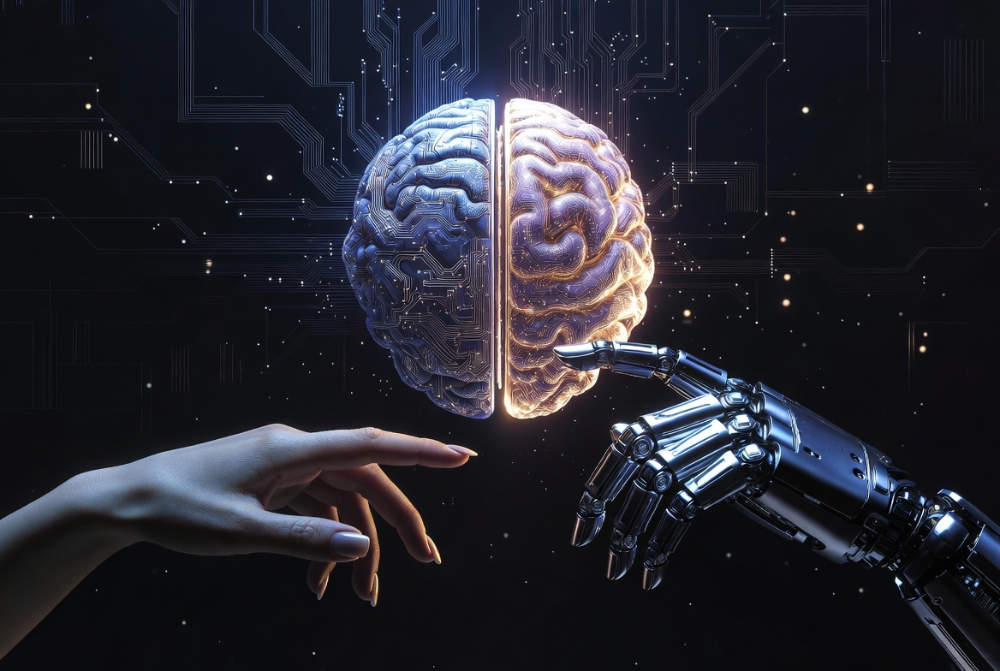
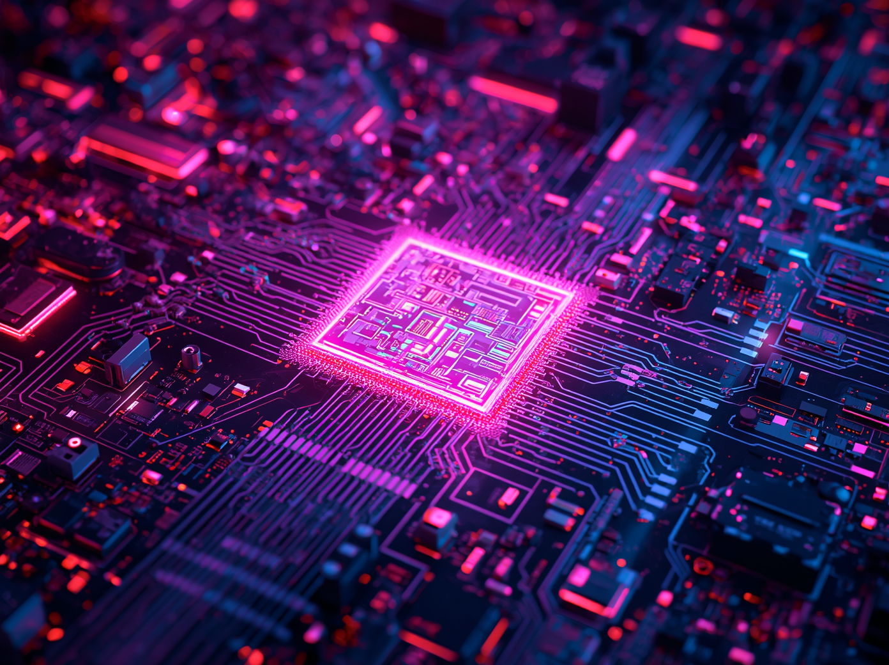

Innovación que transforma el mundo
La tecnología es una de las creaciones más importantes del ser humano, ya que ha permitido transformar el mundo y mejorar la calidad de vida de las personas. Está presente en todos los aspectos de la vida diaria, como la comunicación, la educación, la salud, el transporte y el entretenimiento.
A lo largo del tiempo, la tecnología ha evolucionado desde herramientas simples creadas en la antigüedad hasta sistemas avanzados como la inteligencia artificial, los robots y la automatización. Este desarrollo ha permitido que la humanidad resuelva problemas de manera más rápida, eficiente y segura.
La tecnología es el conjunto de conocimientos científicos, técnicas, herramientas y procesos que el ser humano utiliza para diseñar, crear y mejorar productos, servicios y sistemas que facilitan la vida cotidiana.
No solo se trata de dispositivos electrónicos modernos, sino también de cualquier herramienta o método creado para resolver una necesidad. Por ejemplo, desde la invención de la rueda hasta los sistemas digitales actuales, todo forma parte de la tecnología.
La tecnología también es una forma de aplicar la ciencia en la vida práctica, permitiendo transformar ideas en soluciones útiles para la sociedad.

La historia de la tecnología muestra cómo ha evolucionado el ser humano a lo largo del tiempo:
En la prehistoria, el ser humano creó herramientas de piedra, descubrió el fuego y desarrolló técnicas de caza y supervivencia.
En la edad antigua, surgieron grandes inventos como la rueda, la escritura, la agricultura y los sistemas de riego.
Durante la edad media, se desarrollaron inventos como la brújula, los molinos de viento y mejoras en la navegación.
En la revolución industrial, la tecnología avanzó rápidamente con la creación de máquinas, fábricas, motores y el uso de la electricidad.
Finalmente, en la era digital, aparecieron las computadoras, el internet, los teléfonos inteligentes y la inteligencia artificial, marcando un cambio total en la forma de vivir.
La evolución de la tecnología muestra cómo el ser humano ha desarrollado herramientas y sistemas cada vez más avanzados a lo largo del tiempo.
La tecnología digital se refiere al uso de dispositivos electrónicos y sistemas informáticos para procesar, almacenar y transmitir información. Incluye computadoras, celulares, internet, redes sociales y aplicaciones. Esta tecnología ha cambiado la forma en que las personas se comunican, estudian y trabajan, permitiendo la conexión global en tiempo real.
La tecnología industrial se utiliza en fábricas y procesos de producción para fabricar bienes en grandes cantidades. Gracias a ella, se han desarrollado máquinas y sistemas automatizados que reducen el esfuerzo humano y aumentan la eficiencia en la producción de alimentos, ropa, vehículos y otros productos.
La tecnología médica está enfocada en mejorar la salud y salvar vidas. Incluye equipos como rayos X, resonancias magnéticas, cirugías asistidas por robots, vacunas y medicamentos avanzados. Esta tecnología permite diagnósticos más precisos y tratamientos más efectivos.
La tecnología ecológica busca proteger el medio ambiente y reducir el impacto ambiental. Incluye el uso de energías renovables como la solar y eólica, sistemas de reciclaje y tecnologías que disminuyen la contaminación y el consumo de recursos naturales.
La tecnología de transporte permite el movimiento de personas y mercancías de un lugar a otro. Incluye autos, aviones, trenes, barcos y vehículos eléctricos. Gracias a esta tecnología, los viajes son más rápidos, seguros y eficientes.
La siguiente tabla resume las principales diferencias entre los tipos de tecnología mencionados anteriormente.
| Tipo | Aplicación | Beneficio principal |
|---|---|---|
| Digital | Internet, celulares, aplicaciones | Mejora la comunicación y el acceso a información |
| Industrial | Máquinas, fábricas, automatización | Aumenta la producción y reduce esfuerzos |
| Médica | Rayos X, vacunas, cirugías asistidas | Mejora diagnósticos y tratamientos |
| Ecológica | Energía solar, reciclaje, tecnologías limpias | Reduce el impacto ambiental |
| Transporte | Autos, trenes, aviones, vehículos eléctricos | Facilita la movilidad y el comercio |

La tecnología actual está marcada por avances muy importantes como la inteligencia artificial, los dispositivos inteligentes, las redes sociales y el internet de las cosas. Estos avances han cambiado la vida cotidiana, permitiendo que las personas se comuniquen, trabajen y aprendan de manera más rápida y eficiente.
La inteligencia artificial es una rama de la tecnología que permite que las máquinas realicen tareas que normalmente requieren inteligencia humana, como aprender, razonar y tomar decisiones. Se utiliza en asistentes virtuales, chatbots, robots y sistemas de recomendación en plataformas digitales.
La tecnología ha transformado la educación al permitir el acceso a clases virtuales, plataformas educativas, libros digitales y recursos interactivos. Esto ha hecho posible que los estudiantes aprendan desde cualquier lugar del mundo, facilitando una educación más accesible y flexible.
En el área de la salud, la tecnología ha permitido grandes avances como diagnósticos más rápidos, cirugías más precisas, desarrollo de vacunas y tratamientos más efectivos. Esto ha contribuido a salvar millones de vidas y mejorar la calidad de atención médica.
La tecnología ha transformado la sociedad moderna, cambiando la forma en que las personas se comunican, trabajan y viven. Las redes sociales, el internet y los dispositivos móviles han creado una sociedad más conectada, aunque también han generado nuevos retos como la dependencia digital.
La tecnología ha generado cambios profundos en la sociedad moderna, transformando la forma en que las personas interactúan, trabajan y acceden a la información. Su impacto es visible en todos los ámbitos de la vida cotidiana.
Gracias a los avances tecnológicos, se han desarrollado nuevas formas de comunicación, producción y aprendizaje, lo que ha permitido mejorar la calidad de vida. Sin embargo, también ha generado desafíos como la dependencia digital y los riesgos en la seguridad de la información.
En conclusión, la tecnología es una herramienta poderosa que puede generar grandes beneficios si se utiliza de manera responsable.
La seguridad tecnológica se encarga de proteger la información y los sistemas digitales. Incluye medidas como el uso de contraseñas seguras, antivirus, protección de datos personales y prevención de ciberataques o estafas en internet.
El futuro de la tecnología promete grandes avances como ciudades inteligentes, autos autónomos, robots más avanzados, realidad virtual y sistemas completamente automatizados. Estos cambios seguirán transformando la vida humana de manera significativa.
La tecnología también juega un papel importante en el cuidado del planeta mediante el uso de energías renovables, vehículos eléctricos, reciclaje tecnológico y sistemas que ayudan a reducir la contaminación ambiental.
La tecnología está presente en todas las actividades diarias, como el uso del celular para comunicarse, el internet para estudiar, los electrodomésticos en el hogar y los sistemas digitales en bancos y servicios.
La tecnología se encuentra en situaciones cotidianas como el uso de aplicaciones móviles, sistemas de pago digital, plataformas educativas y herramientas de trabajo remoto. Por ejemplo, aplicaciones como WhatsApp, Zoom o Google Classroom permiten comunicarse y aprender desde cualquier lugar del mundo.
En el ámbito empresarial, las empresas utilizan software de gestión, inteligencia artificial y automatización para mejorar su productividad y tomar decisiones más eficientes.
La tecnología ha transformado profundamente la sociedad moderna, facilitando el acceso a la información y mejorando la calidad de vida. Sin embargo, también ha generado desafíos como la dependencia digital, la desinformación y la pérdida de privacidad.
En países como Perú, la tecnología ha permitido mejorar la educación virtual, el acceso a servicios financieros y la comunicación en zonas rurales.
Desde mi punto de vista, la tecnología es una herramienta fundamental para el desarrollo humano, pero debe utilizarse de manera responsable. Su uso adecuado puede mejorar la educación, la economía y la calidad de vida, mientras que su uso excesivo puede generar dependencia y problemas sociales.
La tecnología está directamente relacionada con la ciencia, ya que aplica los conocimientos científicos para resolver problemas. Puedes aprender más en esta página: ¿Qué es la ciencia?
La tecnología aporta múltiples beneficios en diferentes áreas de la vida, permitiendo mejorar la eficiencia, la comunicación y el desarrollo de la sociedad.
La tecnología facilita la vida humana, ahorra tiempo, mejora la comunicación, impulsa la educación y permite el desarrollo de la sociedad en diferentes áreas.
El uso excesivo de la tecnología puede generar dependencia, distracción, problemas de salud y riesgos de seguridad en internet.
A lo largo de la historia, la tecnología ha generado datos sorprendentes que reflejan su impacto en la sociedad y su rápida evolución.
Para aprovechar al máximo los beneficios de la tecnología, es fundamental utilizarla de manera consciente y responsable. Un uso adecuado permite mejorar la calidad de vida sin generar efectos negativos.
El uso excesivo o inadecuado puede provocar problemas como dependencia digital, desinformación o riesgos en la seguridad personal, por lo que es importante adoptar buenas prácticas.
La tecnología es una herramienta fundamental para el desarrollo de la humanidad. Ha permitido grandes avances en todos los campos, pero su uso debe ser responsable para aprovechar sus beneficios y evitar sus efectos negativos.
“La tecnología no es solo herramientas, es la forma en que transformamos el mundo.”